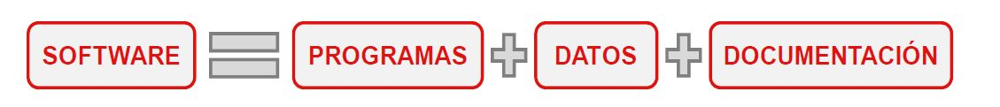

¿Que es software?
Conjunto de programas, procedimientos, datos asociados y documentación que esta asociada a un sistema informático.
1. Componentes del Software
1.1. Programas:
Conjunto de instrucciones que proporcionan funcionalidad deseada cuando son ejecutadas por el ordenador.
1.2. Datos:
Es la información que gestiona, almacena y utilizan los Programas para ejecutar tareas de forma apropiada.
1.3. Documentos:
Documentos que proporcionan información sobre el uso del sistema y sobre su arquitectura interna (Manual de usuario y Manual Técnico).

2. Caracteristicas del software
- Se desarrolla o implementa, no se manofactura.
- No sufre desgaste, pero si deterioro.
- Su desarrollo es a medida
3. Tipos de Software
| Aplicación de software | Son los programas diseñados para los usuarios con la finalidad de facilitar la realización de tareas. Se usa para proveer servicios a clientes y ejecutar negocios de forma mas eficiente. |
|---|---|
| Software de sistemas | Permite a las computadoras controlar los diferente componentes físicos y lógicos del equipo. Se usa para operar y mantener un sistema informático. |
| Software de Tiempo Real | Sistema de hardware y software que tienen restricciones temporales con respecto al computo de sus procesamientos. El correcto funcionamiento del sistema no depende sólo de los resultados de los cálculos computacionales, sino que también dependen del tiempo en que se producen estos resultados. Por eso es que los programas en tiempo real deben garantizar una respuesta antes que se cumpla un limite de tiempo. |
| Software de Gestión | Son programas para ordenadores que facilitan la realización de tareas administrativas y resulta muy útil para cualquier usuario como también para las empresas. Las aplicaciones en esta área reestructuran los datos existentes para facilitar las operaciones comerciales o gestionar la toma de decisiones. |
| Software de ingeniería y científico | El objetivo es la programación de elaborados algoritmos matemáticos para modelar y simular complejos sistemas o procesos, tales como reacciones nucleares modelos meteorológicos, la red eléctrica de un país o el diseño de un avión. |
| Software empotrado | Reside en memoria de sólo lectura (memorias ROM) y se utiliza para controlar productos y sistemas de los mercados industriales y de consumo. El software empotrado puede ejecutar funciones muy limitadas y curiosas.
Ejemplo:
|
| Software de computadoras personales | Software de computadoras personales: Incluye a cualquier software que permita al usuario incrementar la productividad de sus operaciones. El procesamiento de textos, las hojas de cálculo, los gráficos por computadora, multimedia, entretenimiento, gestión de bases de datos, aplicaciones financieras, de negocios y personales y redes o acceso a bases de datos externas son algunas de los cientos de aplicaciones. |
| Software basado en web | Sistema de información que permite que cualquier gestión sea organizada por internet Las páginas web buscadas por un explorador son software que incorpora instrucciones ejecutables y datos. |
| Software de inteligencia artificial | El software de inteligencia artificial incluye aplicaciones de robótica, visión artificial, redes neuronales o sobre la teoría de juegos. Hacen uso de algoritmos no numéricos para la resolución de problemas como, por ejemplo:
|